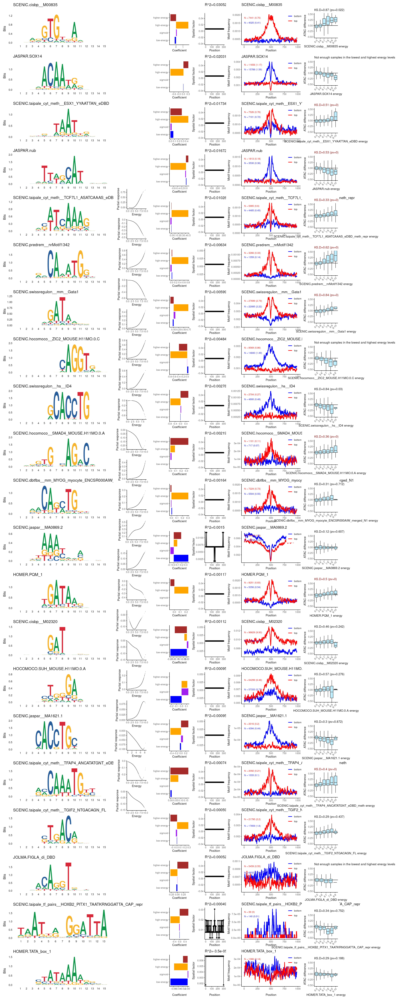

iceqream
iceqream.Rmd
library(iceqream)
library(misha)
library(misha.ext)
#>
#> Attaching package: 'misha.ext'
#> The following object is masked from 'package:misha':
#>
#> gtrack.create_dirs
options(timeout = 2 * 60 * 60) # allow 2 hours for loading large filesRunning IceQream on a mouse gastrulation trajectory
In this example we will run IceQream on a mouse gastrulation trajectory, Epiblast to Early nascent mesoderm. This is one of the datasets used in the original IceQream paper.
Download data
Create a misha genome
We will start by creating a misha database for mm10 genome. If you already have an mm10 misha database you can skip this part and load the genome using gsetroot("path/to/mm10").
gdb.create_genome("mm10")
gsetroot("mm10")Download the example files
The basic inputs for an iceqream regression are genomic positions of peaks and two vectors of ATAC scores. Optionally, additional features such as epigenomic features can be provided. We will download these files for the Epiblast to Early nascent mesoderm trajectory during mouse gastrulation.
download.file("https://iceqream.s3.eu-west-1.amazonaws.com/gastrulation-example.tar.gz", "gastrulation-example.tar.gz")
untar("gastrulation-example.tar.gz")
peak_intervals <- readr::read_tsv("gastrulation-example/peak_intervals.tsv", show_col_types = FALSE)
atac_scores <- readr::read_rds("gastrulation-example/atac_scores.rds")
additional_features <- readr::read_rds("gastrulation-example/additional_features.rds")
normalization_intervals <- readr::read_tsv("gastrulation-example/gastrulation_intervals.tsv", show_col_types = FALSE)We loaded the following objects:
-
peak_intervals: A data frame with genomic positions of peaks.
head(peak_intervals)
#> # A tibble: 6 × 6
#> chrom start end peak_name const tss_dist
#> <chr> <dbl> <dbl> <chr> <lgl> <dbl>
#> 1 chr1 3003620 3003920 1_Xkr4_3004 FALSE 211711
#> 2 chr1 3008880 3009180 1_Xkr4_3009 FALSE 206451
#> 3 chr1 3035780 3036080 1_Xkr4_3036 FALSE 179551
#> 4 chr1 3062880 3063180 1_Xkr4_3063 FALSE 152451
#> 5 chr1 3191760 3192060 1_Xkr4_3192 FALSE 23571
#> 6 chr1 3264000 3264300 1_Xkr4_3264 FALSE -48368
nrow(peak_intervals)
#> [1] 99291-
atac_scores: A matrix with ATAC scores for each peak at the different bins of the trajectory. We will regress the last bin (bin4) vs the first bin (bin1).
head(atac_scores)
#> bin1 bin2 bin3 bin4
#> 1_Xkr4_3004 0.004287514 0.005028976 0.04591491 0.02115745
#> 1_Xkr4_3009 0.016835629 0.020535310 0.01645209 0.05152993
#> 1_Xkr4_3036 0.314234571 0.351552061 0.24488575 0.21536988
#> 1_Xkr4_3063 0.302141442 0.368683558 0.14807723 0.09834478
#> 1_Xkr4_3192 0.234917748 0.159842916 0.24823286 0.40749248
#> 1_Xkr4_3264 0.057764122 0.079473969 0.05351386 0.05018866
nrow(atac_scores)
#> [1] 99291-
additional_features: A data frame with additional features for each peak. This is optional.
head(additional_features)
#> cg_cont k4me3 k27me3 k27ac prox_bin1_punc_all spatial_ratio
#> 1_Xkr4_3004 0.6949901 0 0 0 0.2781718 4.764228
#> 1_Xkr4_3009 0.4440685 0 0 0 0.3025915 7.041941
#> 1_Xkr4_3036 1.0952665 0 0 0 0.2357028 8.936077
#> 1_Xkr4_3063 0.2247980 0 0 0 0.3126778 7.760096
#> 1_Xkr4_3192 0.9602237 0 0 0 0.6481828 5.660977
#> 1_Xkr4_3264 0.9239115 0 0 0 0.3089618 3.679446
#> TT CT GT AT TC CC GC
#> 1_Xkr4_3004 2.1875 8.181818 4.482759 2.500000 7.567568 4.615385 4.897959
#> 1_Xkr4_3009 5.0000 8.181818 3.103448 4.642857 6.216216 6.923077 4.285714
#> 1_Xkr4_3036 9.3750 4.090909 6.206897 4.642857 4.594595 2.820513 3.265306
#> 1_Xkr4_3063 4.3750 6.136364 5.517241 6.071429 7.297297 2.820513 2.653061
#> 1_Xkr4_3192 6.8750 6.363636 5.172414 8.571429 5.405405 4.358974 2.653061
#> 1_Xkr4_3264 7.5000 7.500000 4.827586 4.285714 7.297297 4.871795 3.877551
#> AC TG CG GG AG TA CA
#> 1_Xkr4_3004 3.103448 6.842105 0.9756098 7.435897 5.555556 1.111111 5.526316
#> 1_Xkr4_3009 7.241379 6.052632 0.4878049 2.051282 4.888889 4.444444 7.105263
#> 1_Xkr4_3036 4.482759 4.736842 1.2195122 6.153846 6.222222 4.814815 6.052632
#> 1_Xkr4_3063 5.172414 6.052632 0.0000000 4.102564 5.555556 4.074074 7.368421
#> 1_Xkr4_3192 4.827586 6.315789 0.9756098 2.820513 3.555556 8.518519 3.947368
#> 1_Xkr4_3264 5.517241 5.789474 1.4634146 2.564103 4.444444 3.703704 6.052632
#> GA AA
#> 1_Xkr4_3004 4.594595 2.8125
#> 1_Xkr4_3009 4.594595 2.8125
#> 1_Xkr4_3036 4.594595 4.6875
#> 1_Xkr4_3063 5.135135 7.1875
#> 1_Xkr4_3192 4.054054 6.2500
#> 1_Xkr4_3264 3.783784 3.4375
nrow(additional_features)
#> [1] 99291In addition, we loaded a set of genomic intervals that will be used for motif energy normalization. These intervals are all the peaks including the ones that are close to TSSs.
Compute motif energies
The first step in the IceQream pipeline is to compute motif energies for each motif model and each peak. This process is computationally intensive as we are computing the energy for 21862 motifs collected from HOMER, JASPAR, Jolma et al., HOCOMOCO and SCENIC databases.
Calculation is done by:
# motif_energies <- compute_motif_energies(peak_intervals, motif_db, normalization_intervals = normalization_intervals)If you want to start with a less computationally intensive example, you can use the the scenic clusters (1615) instead of the full motif database. This will still take ~10-15 minutes, and the performance will be significantly lower.
# motif_energies <- compute_motif_energies(peak_intervals, motif_db_scenic_clusters, normalization_intervals = normalization_intervals)In any case, we will load the precomputed motif energies for this example. Note that the full matrix requires ~23GB of RAM.
download.file("https://iceqream.s3.eu-west-1.amazonaws.com/gastrulation_energies.tar.gz", "gastrulation_energies.tar.gz")
untar("gastrulation_energies.tar.gz")Load the motif energies:
Run IceQream
We will now run IceQream on the gastrulation trajectory:
traj_model <- iq_regression(
peak_intervals = peak_intervals,
atac_scores = atac_scores,
motif_energies = motif_energies,
additional_features = additional_features,
norm_intervals = normalization_intervals,
seed = 60427,
frac_train = 0.8,
max_motif_num = 30
)
#> ℹ Training on 79432 intervals (80%) and testing on 19859 intervals (20%)
#> ℹ Number of peaks: 79432
#> → Extracting sequences...
#> ℹ Calculating correlations between 21862 motif energies and ATAC difference...
#> ℹ Selected 1558 (out of 21862) features with absolute correlation >= 0.05
#> ℹ Running first round of regression, # of features: 1558
#> Warning in eval(family$initialize): non-integer #successes in a binomial glm!
#> Warning: glmnet.fit: algorithm did not converge
#> ℹ Taking 743 features with beta >= 0.003
#> ℹ Running second round of regression...
#> Warning in eval(family$initialize): non-integer #successes in a binomial glm!
#> Warning in eval(family$initialize): glmnet.fit: algorithm did not converge
#> ℹ Clustering 740 features into 30 clusters...
#> ℹ Choosing top 30 features clusters
#> ℹ Features left: 740
#> ℹ Learning a model for each motif cluster...
#> ℹ Infering energies...
#> Warning in eval(family$initialize): non-integer #successes in a binomial glm!
#> Warning in eval(family$initialize): glmnet.fit: algorithm did not converge
#> ✔ Finished running model. Number of non-zero coefficients: 201 (out of 208). R^2: 0.309612868425167
#> → Filtering the model
#> Warning in eval(family$initialize): non-integer #successes in a binomial glm!
#> Warning in eval(family$initialize): glmnet.fit: algorithm did not converge
#> ℹ Using 7940 samples for filtering
#> ℹ R^2 of the full model: 0.29602387224171
#> ℹ Filtering features with R^2 < 5e-04 and bits < 1.75
#> Warning in eval(family$initialize): non-integer #successes in a binomial glm!
#> Warning in eval(family$initialize): glmnet.fit: algorithm did not converge
#> → R^2 added by JASPAR.nub (----TTAGCAT----): 0.0167275374369183. Bits: 7.00354991194335
#> Warning in eval(family$initialize): non-integer #successes in a binomial glm!
#> Warning in eval(family$initialize): glmnet.fit: algorithm did not converge
#> → R^2 added by SCENIC.cisbp__M08572 (---T-----------): 0.0026997995326517. Bits: 1.10663727169756
#> Warning in eval(family$initialize): non-integer #successes in a binomial glm!
#> Warning in eval(family$initialize): glmnet.fit: algorithm did not converge
#> → R^2 added by SCENIC.predrem__nrMotif1342 (---G-CAAATGG---): 0.00634826224842949. Bits: 7.99024178403719
#> Warning in eval(family$initialize): non-integer #successes in a binomial glm!
#> Warning in eval(family$initialize): glmnet.fit: algorithm did not converge
#> → R^2 added by SCENIC.cisbp__M00835 (----GTGT-A-----): 0.0305228554917784. Bits: 4.57075101707182
#> Warning in eval(family$initialize): non-integer #successes in a binomial glm!
#> Warning in eval(family$initialize): glmnet.fit: algorithm did not converge
#> → R^2 added by SCENIC.hdpi__CREB1 (----TGAC--A----): 7.75643877909959e-05. Bits: 1.89464022573617
#> Warning in eval(family$initialize): non-integer #successes in a binomial glm!
#> Warning in eval(family$initialize): glmnet.fit: algorithm did not converge
#> → R^2 added by SCENIC.homer__ACCATCTGTT_NeuroG2 (-----CAGATGG---): -0.000120197791811605. Bits: 4.59034584610514
#> Warning in eval(family$initialize): non-integer #successes in a binomial glm!
#> Warning in eval(family$initialize): glmnet.fit: algorithm did not converge
#> → R^2 added by SCENIC.swissregulon__hs__ID4 (-----GCACCTG---): 0.00278910362030049. Bits: 10.7708040996155
#> Warning in eval(family$initialize): non-integer #successes in a binomial glm!
#> Warning in eval(family$initialize): glmnet.fit: algorithm did not converge
#> → R^2 added by SCENIC.taipale_cyt_meth__ESX1_YYAATTAN_eDBD (------TAAT-G---): 0.0173484629685431. Bits: 3.82249971740051
#> Warning in eval(family$initialize): non-integer #successes in a binomial glm!
#> Warning in eval(family$initialize): glmnet.fit: algorithm did not converge
#> → R^2 added by SCENIC.jaspar__MA1621.1 (---CACCTGC-----): 0.000955852850026528. Bits: 9.97745953946352
#> Warning in eval(family$initialize): non-integer #successes in a binomial glm!
#> Warning in eval(family$initialize): glmnet.fit: algorithm did not converge
#> → R^2 added by JOLMA.FIGLA_di_DBD (---ACAGGT------): 0.000527737749653978. Bits: 5.74258158770429
#> Warning in eval(family$initialize): non-integer #successes in a binomial glm!
#> Warning in eval(family$initialize): glmnet.fit: algorithm did not converge
#> → R^2 added by SCENIC.cisbp__M01516 (----ATGCA------): 4.75776194436284e-06. Bits: 3.33918513257243
#> Warning in eval(family$initialize): non-integer #successes in a binomial glm!
#> Warning in eval(family$initialize): glmnet.fit: algorithm did not converge
#> → R^2 added by SCENIC.taipale_cyt_meth__TFAP4_ANCATATGNT_eDBD_meth (---ACCAAATGTT--): 0.000743126659866977. Bits: 9.24966897852248
#> Warning in eval(family$initialize): non-integer #successes in a binomial glm!
#> Warning in eval(family$initialize): glmnet.fit: algorithm did not converge
#> → R^2 added by SCENIC.swissregulon__mm__Gata1 (-----GATA------): 0.0059904574972684. Bits: 3.58604128728144
#> Warning in eval(family$initialize): non-integer #successes in a binomial glm!
#> Warning in eval(family$initialize): glmnet.fit: algorithm did not converge
#> → R^2 added by SCENIC.taipale_cyt_meth__TGIF2_NTGACAGN_FL (----CTGACA-----): 0.000589606574210977. Bits: 5.47428832011949
#> Warning in eval(family$initialize): non-integer #successes in a binomial glm!
#> Warning in eval(family$initialize): glmnet.fit: algorithm did not converge
#> → R^2 added by HOCOMOCO.SUH_MOUSE.H11MO.0.A (-----TGGGA-----): 0.000956012692981068. Bits: 2.60135226413422
#> Warning in eval(family$initialize): non-integer #successes in a binomial glm!
#> Warning in eval(family$initialize): glmnet.fit: algorithm did not converge
#> → R^2 added by SCENIC.jaspar__MA0869.2 (----AAAT--A----): 0.00149994976970297. Bits: 2.43576636244517
#> Warning in eval(family$initialize): non-integer #successes in a binomial glm!
#> Warning in eval(family$initialize): glmnet.fit: algorithm did not converge
#> → R^2 added by SCENIC.flyfactorsurvey__HLHm5_FlyReg_FBgn0002631 (------A--------): 0.00010975195439078. Bits: 0.788368839986324
#> Warning in eval(family$initialize): non-integer #successes in a binomial glm!
#> Warning in eval(family$initialize): glmnet.fit: algorithm did not converge
#> → R^2 added by HOMER.PQM_1 (----TGATAAG----): 0.00117074463927358. Bits: 5.35487254467996
#> Warning in eval(family$initialize): non-integer #successes in a binomial glm!
#> Warning in eval(family$initialize): glmnet.fit: algorithm did not converge
#> → R^2 added by SCENIC.hocomoco__SMAD4_MOUSE.H11MO.0.A (---GTG-CAGAC---): 0.00219652282477695. Bits: 7.85384961351908
#> Warning in eval(family$initialize): non-integer #successes in a binomial glm!
#> Warning in eval(family$initialize): glmnet.fit: algorithm did not converge
#> → R^2 added by SCENIC.cisbp__M02320 (-----GAT-------): 0.00112380163185027. Bits: 3.4817723117682
#> Warning in eval(family$initialize): non-integer #successes in a binomial glm!
#> Warning in eval(family$initialize): glmnet.fit: algorithm did not converge
#> → R^2 added by SCENIC.hocomoco__ZIC2_MOUSE.H11MO.0.C (-------CAGGTG--): 0.00484774757259671. Bits: 7.66340237394876
#> Warning in eval(family$initialize): non-integer #successes in a binomial glm!
#> Warning in eval(family$initialize): glmnet.fit: algorithm did not converge
#> → R^2 added by JASPAR.SOX14 (----ACAATG-----): 0.020314669301463. Bits: 6.01846819360433
#> Warning in eval(family$initialize): non-integer #successes in a binomial glm!
#> Warning in eval(family$initialize): glmnet.fit: algorithm did not converge
#> → R^2 added by SCENIC.taipale_cyt_meth__TCF7L1_ASATCAAAS_eDBD_meth_repr (----CATCAAAG---): 0.0102889730006238. Bits: 5.82383823306701
#> Warning in eval(family$initialize): non-integer #successes in a binomial glm!
#> Warning in eval(family$initialize): glmnet.fit: algorithm did not converge
#> → R^2 added by SCENIC.nitta__SoxN_TGAGGT40NTCC_KK_NCGAACAATNN_m1_c2 (----CGTAC------): 0.00015623097637113. Bits: 2.83138146510066
#> Warning in eval(family$initialize): non-integer #successes in a binomial glm!
#> Warning in eval(family$initialize): glmnet.fit: algorithm did not converge
#> → R^2 added by SCENIC.dbtfbs__mm_MYOG_myocyte_ENCSR000AIW_merged_N1 (--AACAGCTG-----): 0.00164317632907796. Bits: 6.33133125285195
#> Warning in eval(family$initialize): non-integer #successes in a binomial glm!
#> Warning in eval(family$initialize): glmnet.fit: algorithm did not converge
#> → R^2 added by HOMER.TATA_box_1 (---CTATAAAAG---): -3.49324694661757e-05. Bits: 6.0079726304727
#> Warning in eval(family$initialize): non-integer #successes in a binomial glm!
#> Warning in eval(family$initialize): glmnet.fit: algorithm did not converge
#> → R^2 added by SCENIC.predrem__nrMotif1713 (----GTCACA-----): 0.000223555700244238. Bits: 5.74538254268905
#> Warning in eval(family$initialize): non-integer #successes in a binomial glm!
#> Warning in eval(family$initialize): glmnet.fit: algorithm did not converge
#> → R^2 added by SCENIC.transfac_public__M00075 (--TCACCCCAC----): -0.00041752947580298. Bits: 3.92211592781422
#> Warning in eval(family$initialize): non-integer #successes in a binomial glm!
#> Warning in eval(family$initialize): glmnet.fit: algorithm did not converge
#> → R^2 added by SCENIC.taipale_cyt_meth__HMX1_NCAMTTAAN_eDBD_meth_repr (-----AAGTG-----): -0.00057932247059217. Bits: 6.61434403320222
#> Warning in eval(family$initialize): non-integer #successes in a binomial glm!
#> Warning in eval(family$initialize): glmnet.fit: algorithm did not converge
#> → R^2 added by SCENIC.taipale_tf_pairs__HOXB2_PITX1_TAATKRNGGATTA_CAP_repr (TAATTA-GGATTA): 0.000496812804951952. Bits: 10.8696138190304
#> ℹ Removing the following features with bits < 1.75: "SCENIC.cisbp__M08572" and "SCENIC.flyfactorsurvey__HLHm5_FlyReg_FBgn0002631"
#> ℹ Trying to remove the following features with R^2 < 5e-04: "SCENIC.hdpi__CREB1", "SCENIC.homer__ACCATCTGTT_NeuroG2", "SCENIC.cisbp__M01516", "SCENIC.flyfactorsurvey__HLHm5_FlyReg_FBgn0002631", "SCENIC.nitta__SoxN_TGAGGT40NTCC_KK_NCGAACAATNN_m1_c2", "HOMER.TATA_box_1", "SCENIC.predrem__nrMotif1713", "SCENIC.transfac_public__M00075", "SCENIC.taipale_cyt_meth__HMX1_NCAMTTAAN_eDBD_meth_repr", and "SCENIC.taipale_tf_pairs__HOXB2_PITX1_TAATKRNGGATTA_CAP_repr"
#> Warning in eval(family$initialize): non-integer #successes in a binomial glm!
#> Warning in eval(family$initialize): glmnet.fit: algorithm did not converge
#> Warning in eval(family$initialize): non-integer #successes in a binomial glm!
#> Warning: glmnet.fit: algorithm did not converge
#> → Removing "SCENIC.transfac_public__M00075" changed the R^2 by -0.000411123637068522
#> Warning in eval(family$initialize): non-integer #successes in a binomial glm!
#> Warning in eval(family$initialize): glmnet.fit: algorithm did not converge
#> → Removing "SCENIC.homer__ACCATCTGTT_NeuroG2" changed the R^2 by -6.44393580477853e-05
#> Warning in eval(family$initialize): non-integer #successes in a binomial glm!
#> Warning in eval(family$initialize): glmnet.fit: algorithm did not converge
#> → Not removing "HOMER.TATA_box_1" (changed the R^2 by only 0.000758037995756855).
#> Warning in eval(family$initialize): non-integer #successes in a binomial glm!
#> Warning in eval(family$initialize): glmnet.fit: algorithm did not converge
#> → Removing "SCENIC.cisbp__M01516" changed the R^2 by -2.65246572077604e-05
#> Warning in eval(family$initialize): non-integer #successes in a binomial glm!
#> Warning in eval(family$initialize): glmnet.fit: algorithm did not converge
#> → Removing "SCENIC.hdpi__CREB1" changed the R^2 by -0.000189532430595718
#> Warning in eval(family$initialize): non-integer #successes in a binomial glm!
#> Warning in eval(family$initialize): glmnet.fit: algorithm did not converge
#> → Removing "SCENIC.nitta__SoxN_TGAGGT40NTCC_KK_NCGAACAATNN_m1_c2" changed the R^2 by 0.000190831533410263
#> Warning in eval(family$initialize): non-integer #successes in a binomial glm!
#> Warning in eval(family$initialize): glmnet.fit: algorithm did not converge
#> → Removing "SCENIC.predrem__nrMotif1713" changed the R^2 by 0.000233902642093553
#> Warning in eval(family$initialize): non-integer #successes in a binomial glm!
#> Warning in eval(family$initialize): glmnet.fit: algorithm did not converge
#> → Not removing "SCENIC.taipale_tf_pairs__HOXB2_PITX1_TAATKRNGGATTA_CAP_repr" (changed the R^2 by only 0.00053681107061454).
#> ℹ Removed 2 features with bits < 1.75
#> ℹ Removed 7 features with R^2 < 5e-04
#> Warning in eval(family$initialize): non-integer #successes in a binomial glm!
#> Warning in eval(family$initialize): glmnet.fit: algorithm did not converge
#> ✔ After filtering: Number of non-zero coefficients: 166 (out of 172). R^2: 0.304057017984406. Number of models: 21
#> → Infering trajectory motifs on the test set
#> ℹ Extracting sequences...
#> ℹ Computing motif energies for 19859 intervals
#> ✔ Finished IQ regression.
#>
#> Number of motifs: 21
#> R^2 train: 0.304
#> R^2 test: 0.305
#>
#> Run `plot_traj_model_report(traj_model)` to visualize the model features
#> Run `plot_prediction_scatter(traj_model)` to visualize the model predictionsThe result is a TrajectoryModel object that contains the regression results and the model report:
traj_model
#> <TrajectoryModel> with 21 motifs and 22 additional features
#>
#> Slots include:
#> • @model: A GLM model object. Number of non-zero coefficients: 166
#> • @motif_models: A named list of motif models. Each element contains PSSM and
#> spatial model (21 models: "JASPAR.nub", "SCENIC.predrem__nrMotif1342",
#> "SCENIC.cisbp__M00835", "SCENIC.swissregulon__hs__ID4",
#> "SCENIC.taipale_cyt_meth__ESX1_YYAATTAN_eDBD", "SCENIC.jaspar__MA1621.1",
#> "JOLMA.FIGLA_di_DBD", "SCENIC.taipale_cyt_meth__TFAP4_ANCATATGNT_eDBD_meth",
#> "SCENIC.swissregulon__mm__Gata1", "SCENIC.taipale_cyt_meth__TGIF2_NTGACAGN_FL",
#> "HOCOMOCO.SUH_MOUSE.H11MO.0.A", "SCENIC.jaspar__MA0869.2", "HOMER.PQM_1",
#> "SCENIC.hocomoco__SMAD4_MOUSE.H11MO.0.A", "SCENIC.cisbp__M02320",
#> "SCENIC.hocomoco__ZIC2_MOUSE.H11MO.0.C", "JASPAR.SOX14",
#> "SCENIC.taipale_cyt_meth__TCF7L1_ASATCAAAS_eDBD_meth_repr", …,
#> "HOMER.TATA_box_1", and
#> "SCENIC.taipale_tf_pairs__HOXB2_PITX1_TAATKRNGGATTA_CAP_repr")
#> • @additional_features: A data frame of additional features (22 features)
#> • @coefs: A data frame of coefficients (43 elements)
#> • @model_features: A matrix of the model features (logistic functions of the
#> motif models energies, dimensions: 99291x172)
#> • @normalized_energies: A matrix of normalized energies of the model features
#> (dimensions: 99291x21)
#> • @type: A vector the length of the number of peaks, indicating whether each
#> peak is a training ('train') or a prediction peak ('test')
#> • @diff_score: A numeric value representing the difference score the model was
#> trained on (99291 elements)
#> • @predicted_diff_score: A numeric value representing the predicted difference
#> score
#> • @initial_prego_models: A list of prego models used in the initial phase of
#> the algorithm (0 models)
#> • @peak_intervals: A data frame containing the peak intervals (99291 elements)
#> • @normalization_intervals: A data frame containing the intervals used for
#> energy normalization (129963 elements)
#> • @features_r2: A numeric vector of the added R^2 values for each feature (21
#> elements)
#> • @params: A list of parameters used for training (including:
#> "energy_norm_quantile", "norm_energy_max", "min_energy", "alpha", "lambda",
#> "peaks_size", "spat_num_bins", "spat_bin_size", "distilled_features",
#> "n_clust_factor", "seed", "features_bits", "r2_threshold", "bits_threshold",
#> and "stats")
#>
#> R^2 train: 0.304
#> R^2 test: 0.305Plot results
We can plot the performance of the model:
plot_prediction_scatter(traj_model)
And the model report:
plot_traj_model_report(traj_model)
#> ℹ Plotting 21 motifs
#> Warning: The `<scale>` argument of `guides()` cannot be `FALSE`. Use "none" instead as
#> of ggplot2 3.3.4.
#> ℹ The deprecated feature was likely used in the ggseqlogo package.
#> Please report the issue at <https://github.com/omarwagih/ggseqlogo/issues>.
#> This warning is displayed once every 8 hours.
#> Call `lifecycle::last_lifecycle_warnings()` to see where this warning was
#> generated.
#> ℹ Plotting motif "SCENIC.cisbp__M00835"
#> ℹ Plotting motif "JASPAR.SOX14"
#> ℹ Plotting motif "SCENIC.taipale_cyt_meth__ESX1_YYAATTAN_eDBD"
#> ℹ Plotting motif "JASPAR.nub"
#> ℹ Plotting motif "SCENIC.taipale_cyt_meth__TCF7L1_ASATCAAAS_eDBD_meth_repr"
#> ℹ Plotting motif "SCENIC.predrem__nrMotif1342"
#> ℹ Plotting motif "SCENIC.swissregulon__mm__Gata1"
#> ℹ Plotting motif "SCENIC.hocomoco__ZIC2_MOUSE.H11MO.0.C"
#> ℹ Plotting motif "SCENIC.swissregulon__hs__ID4"
#> ℹ Plotting motif "SCENIC.hocomoco__SMAD4_MOUSE.H11MO.0.A"
#> ℹ Plotting motif "SCENIC.dbtfbs__mm_MYOG_myocyte_ENCSR000AIW_merged_N1"
#> ℹ Plotting motif "SCENIC.jaspar__MA0869.2"
#> ℹ Plotting motif "HOMER.PQM_1"
#> ℹ Plotting motif "SCENIC.cisbp__M02320"
#> ℹ Plotting motif "HOCOMOCO.SUH_MOUSE.H11MO.0.A"
#> ℹ Plotting motif "SCENIC.jaspar__MA1621.1"
#> ℹ Plotting motif "SCENIC.taipale_cyt_meth__TFAP4_ANCATATGNT_eDBD_meth"
#> ℹ Plotting motif "SCENIC.taipale_cyt_meth__TGIF2_NTGACAGN_FL"
#> ℹ Plotting motif "JOLMA.FIGLA_di_DBD"
#> ℹ Plotting motif "SCENIC.taipale_tf_pairs__HOXB2_PITX1_TAATKRNGGATTA_CAP_repr"
#> ℹ Plotting motif "HOMER.TATA_box_1"
#> Warning in ks.test.default(plot_df$observed[plot_df$energy == "0-3"],
#> plot_df$observed[plot_df$energy == : p-value will be approximate in the
#> presence of ties
#> Warning in ks.test.default(plot_df$observed[plot_df$energy == "0-3"],
#> plot_df$observed[plot_df$energy == : p-value will be approximate in the
#> presence of ties
#> Warning in ks.test.default(plot_df$observed[plot_df$energy == "0-3"],
#> plot_df$observed[plot_df$energy == : p-value will be approximate in the
#> presence of ties
#> Warning in ks.test.default(plot_df$observed[plot_df$energy == "0-3"],
#> plot_df$observed[plot_df$energy == : p-value will be approximate in the
#> presence of ties
#> Warning in ks.test.default(plot_df$observed[plot_df$energy == "0-3"],
#> plot_df$observed[plot_df$energy == : p-value will be approximate in the
#> presence of ties
#> Warning in ks.test.default(plot_df$observed[plot_df$energy == "0-3"],
#> plot_df$observed[plot_df$energy == : p-value will be approximate in the
#> presence of ties
#> Warning in ks.test.default(plot_df$observed[plot_df$energy == "0-3"],
#> plot_df$observed[plot_df$energy == : p-value will be approximate in the
#> presence of ties
#> Warning in ks.test.default(plot_df$observed[plot_df$energy == "0-3"],
#> plot_df$observed[plot_df$energy == : p-value will be approximate in the
#> presence of ties
#> Warning in ks.test.default(plot_df$observed[plot_df$energy == "0-3"],
#> plot_df$observed[plot_df$energy == : p-value will be approximate in the
#> presence of ties
#> Warning in ks.test.default(plot_df$observed[plot_df$energy == "0-3"],
#> plot_df$observed[plot_df$energy == : p-value will be approximate in the
#> presence of ties
#> Warning in ks.test.default(plot_df$observed[plot_df$energy == "0-3"],
#> plot_df$observed[plot_df$energy == : p-value will be approximate in the
#> presence of ties
#> Warning in ks.test.default(plot_df$observed[plot_df$energy == "0-3"],
#> plot_df$observed[plot_df$energy == : p-value will be approximate in the
#> presence of ties
#> Warning in ks.test.default(plot_df$observed[plot_df$energy == "0-3"],
#> plot_df$observed[plot_df$energy == : p-value will be approximate in the
#> presence of ties
#> Warning in ks.test.default(plot_df$observed[plot_df$energy == "0-3"],
#> plot_df$observed[plot_df$energy == : p-value will be approximate in the
#> presence of ties
#> Warning in ks.test.default(plot_df$observed[plot_df$energy == "0-3"],
#> plot_df$observed[plot_df$energy == : p-value will be approximate in the
#> presence of ties
#> Warning in ks.test.default(plot_df$observed[plot_df$energy == "0-3"],
#> plot_df$observed[plot_df$energy == : p-value will be approximate in the
#> presence of ties
#> Warning in ks.test.default(plot_df$observed[plot_df$energy == "0-3"],
#> plot_df$observed[plot_df$energy == : p-value will be approximate in the
#> presence of ties
#> Warning: Removed 46 rows containing missing values or values outside the scale range
#> (`geom_line()`).
#> Removed 46 rows containing missing values or values outside the scale range
#> (`geom_line()`).
#> Removed 46 rows containing missing values or values outside the scale range
#> (`geom_line()`).
#> Removed 46 rows containing missing values or values outside the scale range
#> (`geom_line()`).
#> Removed 46 rows containing missing values or values outside the scale range
#> (`geom_line()`).
#> Removed 46 rows containing missing values or values outside the scale range
#> (`geom_line()`).
#> Removed 46 rows containing missing values or values outside the scale range
#> (`geom_line()`).
#> Removed 46 rows containing missing values or values outside the scale range
#> (`geom_line()`).
#> Removed 46 rows containing missing values or values outside the scale range
#> (`geom_line()`).
#> Removed 46 rows containing missing values or values outside the scale range
#> (`geom_line()`).
#> Removed 46 rows containing missing values or values outside the scale range
#> (`geom_line()`).
#> Removed 46 rows containing missing values or values outside the scale range
#> (`geom_line()`).
#> Removed 46 rows containing missing values or values outside the scale range
#> (`geom_line()`).
#> Removed 46 rows containing missing values or values outside the scale range
#> (`geom_line()`).
#> Removed 46 rows containing missing values or values outside the scale range
#> (`geom_line()`).
#> Removed 46 rows containing missing values or values outside the scale range
#> (`geom_line()`).
#> Removed 46 rows containing missing values or values outside the scale range
#> (`geom_line()`).
#> Removed 46 rows containing missing values or values outside the scale range
#> (`geom_line()`).
#> Removed 46 rows containing missing values or values outside the scale range
#> (`geom_line()`).
#> Warning: Removed 42 rows containing missing values or values outside the scale range
#> (`geom_line()`).
#> Warning: Removed 46 rows containing missing values or values outside the scale range
#> (`geom_line()`).